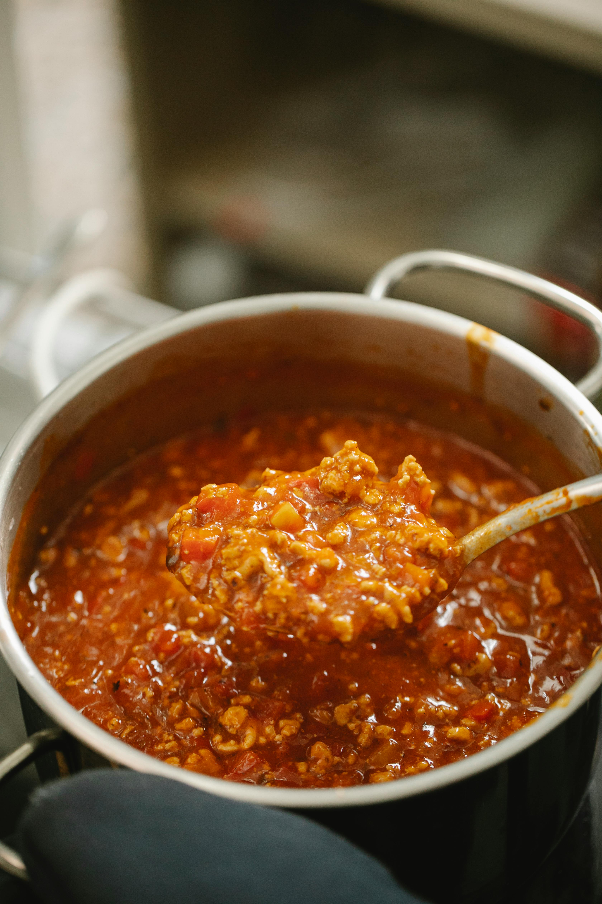

Home
Recipe For Bolognese Sauce

Description
This is a simple recipe for a delicious and versatile Bolognese sauce.
Rather than following a strictly traditional recipe, this will instead be a basic template,
which can be iterated on and changed according to your preferences.
Ingredients
- Extra virgin olive oil
- Minced beef
- Onion
- Carrot
- Celery
- Garlic
- Red wine
- Tinned tomatoes
- Tomato paste
- Bay leaves
Steps
- Make a very finely diced mirepoix
(equal ratio mix of onion, carrot and celery)
and finely dice garlic (as much as you prefer).
Note: You can use a food processor to make this step easier.
-
Add olive oil into a stock pot over medium-high heat,
and add the mirepoix once the oil is up to temperature.
-
Once the vegetable have sweated, add garlic and tomato paste,
and cook through (ensure the garlic does not burn).
-
Add the minced meat into the pot and break it up using a wooden
utensil to ensure an even texture, and make sure to season at this stage
with salt and pepper (do not add too much salt at this stage, as you will have
the chance to control the salt levels later).
Note:There's a few ways to do this step. Some recipes
call for the vegetables to be removed before the meat is added and then they are
added back in once the meat is finished cooking. Additionally, depending on how much
meat you are using, you may want to cook it in smaller batches, so that the meat can
brown more evenly.
-
De-glaze the pot with red wine and tinned tomatoes (I would
do roughly one tin per 500g of minced beef). Then add water until everything is covered
and add bay leaves to the mix. Once you're up to a boil, lower the heat so the sauce is just
simmering and add a lid to the pot.
-
Cook it down until the sauce is at the desired consistency and the
flavours have had a chance to develop (this usually would be about 3 hours for me),
at which point the recipe is complete.